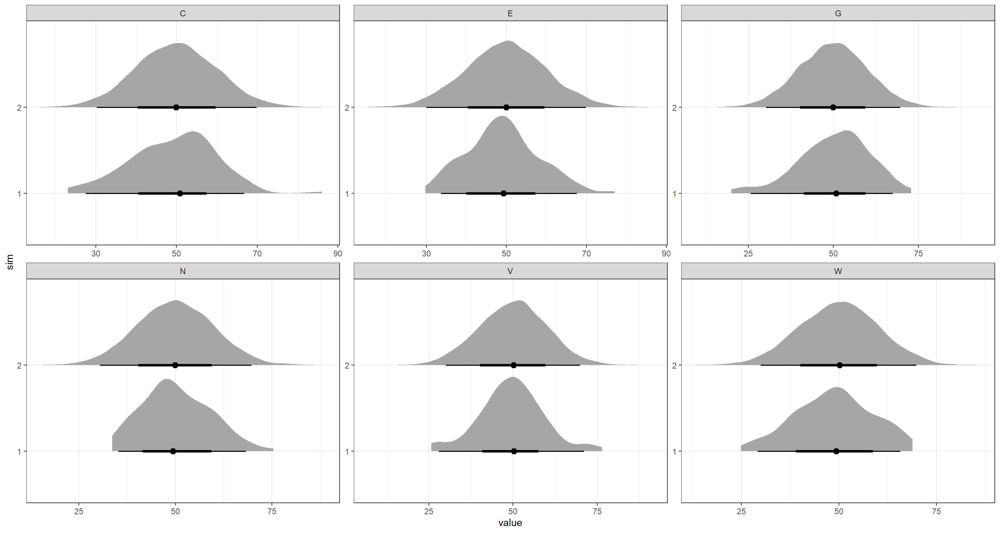

Gaussian Bayesian Networks
Material
Exercises
These are answers and solutions to the exercises at the end of Part 2 in Bayesian Networks with Examples in R by M. Scutari and J.-B. Denis. Much of my inspiration for these solutions, where necessary, by consulting the solutions provided by the authors themselves as in the appendix.
R Environment
For today’s exercise, I load the following packages:
library(bnlearn)
library(ggplot2)
library(tidyr)
library(tidybayes)
Scutari 2.1
Prove that Equation (2.2) implies Equation (2.3).
Equation 2.2 reads:
$$f(C | G = g) \neq f(C)$$
Equation 2.3 reads:
$$f(G | C = c) \neq f(G)$$
So how do we go about demonstrating that the first implies the latter? Well, we are using Bayesian theory here so why not use the Bayes' theorem? So let’s start by rewriting equation 2.2:
$$f(C | G) = \frac{f(C, G)}{f(G)} = \frac{f(G | C) f(C)}{f(G)}$$ So how does this relate to the question that equation 2.2 implies equation 2.3? Well, if $f(C|G) = f(C)$ then this equation would reveal that $f(G|C) = f(G)$ (so that the $f(G)$ terms factor out). Our proof stipulates that these statements aren’t true, but one still implies the other and we land of quod erat demonstrandum.
Scutari 2.2
Within the context of the DAG shown in Figure 2.1, prove that Equation (2.5) is true using Equation (2.6).
This is the DAG in question:

The equation to prove (2.5) is:
$$f(N, W | V = v) = f(N | V = v) f(W | V = v)$$
and we use this equation (2.6) for our proof:
$$f(G, E, V, N, W, C) = f(G) f(E) f(V | G, E) f(N | V) f(W | V) f(C | N, W)$$
Let’s start the proof by integrating over all variables that aren’t $N$, $W$, and $V$ (the variables contained in the equation we are tasked to prove):
$$f(V, W, N) = \int_G \int_E \int_Cf(G,E,V,N,W,C)$$
We do this to remove all but the variables we are after from our equation so let’s follow this rationale:
$$ \begin{aligned} \int_G \int_E \int_Cf(G,E,V,N,W,C) = &f(V) f(N|V) f(W|V) \newline &\times \left( \int_G \int_E f(G) f(E) f(V|G,E) \right) \newline &\left( \int_C f(C|N,W) \right) \end{aligned} $$
Simplifying this mess, we arrive at:
$$f(V, W, N) = f(V) f(N|V) f(W|V)$$
Finally, we can obtain our original formula:
$$f(W,N|V) = \frac{f(V,W,N)}{f(V)} = \frac{f(V) f(N|V) f(W|V)}{f(V)} = f(N|V) f(W|N)$$
Another case of the quod erat demonstrandums.
Scutari 2.3
Compute the marginal variance of the two nodes with two parents from the local distributions proposed in Table 2.1. Why is it much more complicated for C than for V?
Table 2.1 is hardly a table at all, but I did locate it. Basically, it is an amalgamation of the probability distributions proposed for the DAG from the previous exercise:

Note that the parameter $07v$ in the second-to-last row should read $0.7v$.
The two nodes we are after are $V$ and $C$. Since the task already tells us that the computation of the marginal variance for $V$ is easier than for $C$, I start with this one.
- Computation for $V$
Simply translating the probability distribution into a linear model, we receive:
$$V = -10.35534 + 0.5G + 0.70711E + \epsilon_V$$
with the variances of our independent variables $G$, $E$, and $\epsilon_V$ being $10^2$, $10^2$, and $5^2$ respectively. Consequently the variance of $V$ can be calculated as follows:
$$VAR(V) = 0.5^2VAR(G) + 0.70711^2VAR(E) + VAR(\epsilon_V)$$ $$VAR(V) = 0.5^210^2+0.70711^210^2+5^2 = 10$$
- Computation for $C$
For $C$, we can transform our portability distribution into a linear model again:
$$C = 0.3N+0.7W+\epsilon_C$$
this time, however the predictors variables are not independent since they share node $V$ as their parent. Consequently, we have to compute their covariance:
$$COV(N,W) = COV(0.1V, 0.7V) = 0.1 * 0.7 * Var(V) = 0.1 * 0.7 * 10^2$$
So we actually needed to calculate the variance for $V$ to even be able to calculate the variance for $C$. Let’s round this out now, then:
$$ \begin{aligned} Var(C) &= 0.3^2 * VAR(N) + 0.7^2VAR(W) \newline &+ VAR(\epsilon_C) + 2 * 0.3 * 0.7 * COV(N,W) \end{aligned} $$
Now, I simply plug the values into the formula and arrive at:
$$ \begin{aligned} Var(C) &= 0.3^2 * 9.949874^2+0.7^2 * 7.141428 \newline &+6.25^2+2 * 0.3 * 0.7 * 0.1 * 0.7 * 10^2 \newline & = 54.4118 \end{aligned} $$
Curiously, the book suggest this as the solution:
$$Var(C) = (0.3^2+0.7^2+0.3 * 0.7 * 0.14)10^2+6.25^2 = 100.0024$$
I am not sure where the values for VAR(N) and VAR(W) have gone here. If anyone who is reading this knows the answer to it, please contact me and let me know as well.
Scutari 2.4
Write an R script using only the
rnormandcbindfunctions to create a 100 × 6 matrix of 100 observations simulated from the BN defined in Table 2.1. Compare the result with those produced by a call tocpdistfunction.
To simulate a table of observation using the formulae in the probability distribution collection from the previous question (Table 1), we simply select random values for all parent nodes according to their distributions and let the distributions for all offspring nodes do the rest. One important note here, is that the rnorm() function in R takes as an argument of variation the standard deviation $\sigma$ rather than the variance $\sigma^2$:
set.seed(42) # making things reproducible
n <- 1e2 # number of replicates
G <- rnorm(n, 50, 10)
E <- rnorm(n, 50, 10)
V <- rnorm(n, -10.35534 + 0.5 * G + 0.70711 * E, 5)
N <- rnorm(n, 45 + 0.1 * V, 9.949874)
W <- rnorm(n, 15 + 0.7 * V, 7.141428)
C <- rnorm(n, 0.3 * N + 0.7 * W, 6.25)
sim1 <- data.frame(cbind(G, E, V, N, W, C))
Now we do this using the cpdist() function. To do so, we first have to create our Bayesian Network:
dag.bnlearn <- model2network("[G][E][V|G:E][N|V][W|V][C|N:W]")
disE <- list(coef = c("(Intercept)" = 50), sd = 10)
disG <- list(coef = c("(Intercept)" = 50), sd = 10)
disV <- list(coef = c("(Intercept)" = -10.35534, E = 0.70711, G = 0.5), sd = 5)
disN <- list(coef = c("(Intercept)" = 45, V = 0.1), sd = 9.949874)
disW <- list(coef = c("(Intercept)" = 15, V = 0.7), sd = 7.141428)
disC <- list(coef = c("(Intercept)" = 0, N = 0.3, W = 0.7), sd = 6.25)
dis.list <- list(E = disE, G = disG, V = disV, N = disN, W = disW, C = disC)
gbn.bnlearn <- custom.fit(dag.bnlearn, dist = dis.list)
sim2 <- data.frame(cpdist(gbn.bnlearn, nodes = nodes(gbn.bnlearn), evidence = TRUE))
this is pretty much exactly what is done in the chapter.
So let’s compare these simulation outputs:
# preparing all data together in one data frame for plotting
sim1$sim <- 1
sim2$sim <- 2
Plot_df <- rbind(sim1, sim2[, match(colnames(sim1), colnames(sim2))])
Plot_df <- gather(data = Plot_df, key = "node", value = "value", G:C)
Plot_df$sim <- as.factor(Plot_df$sim)
## plotting
ggplot(Plot_df, aes(x = value, y = sim)) +
stat_halfeye() +
facet_wrap(~node, scales = "free") +
theme_bw()

As is apparent from this, all results fall close to the expected values of roughly 50. There are noticeable differences between the simulations. I would suggest that these are due to the fairly low sample size for sim1.
Scutari 2.5
Imagine two ways other than changing the size of the points (as in Section 2.7.2) to introduce a third variable in the plot.
The plot in question is this one:

this plot is aimed at showing the distribution of $C$ when both $E$ and $V$ vary. Here, the variation in $V$ is shown along the x-axis, while the variation of $E$ is contained within the sizes of the circles. The y-axis represents the values of $C$ according to its distributions.
So how else could we add information of $E$ to a plot of $V$ and $C$? I reckon we could:
- Make three scatter plots. One for each pairing of our variables.
- Represent the values of $E$ with a colour saturation gradient.
Scutari 2.6
Can GBNs be extended to log-normal distributions? If so how, if not, why?
GBNs are Gaussian Bayesian Networks - Bayesian Networks where each node follows a Gaussian distribution.
Yes, absolutely they can! We can simply take the logarithm of all initial variables and apply the GBN right away. Of course, all values that shall be transformed using the logarithm have to be positive.
Scutari 2.7
How can we generalise GBNs as defined in Section 2.3 in order to make each node’s variance depend on the node’s parents?
I see absolutely no problem here. Let’s say we have two nodes:
- $A$; parent node with a constant variance
- $B$; child node with a variance dependant the parent node
Then we can easily define the variance of $B$ given $A$ ($VAR(B|A)$) as follows:
$$VAR(B|A) = \left(A-E(A)\right)^2 * \sigma^2_B$$
Scutari 2.8
From the first three lines of Table 2.1, prove that the joint distribution of E, G and V is trivariate normal.
This one is a doozy and I really needed to consult the solutions in the book for this one. Let’s first remind ourselves of the first lines of said table:

To approach this problem it is useful to point out that the logarithm of the density of a multivariate normal distribution is defined as such:
$$f(x) \propto -\frac{1}{2}(x-\mu)^T\sum^{-2}(x-\mu)$$
with $x$ being a random vector and $\mu$ denoting our expectation. $\sum$ identifies the covariance matrix.
Simplifying this, we can transform our variables $G$, $E$, and $V$ to give them a zero marginal expectation and a unity marginal variance. That is a very long-winded way of saying: we normalise our variables:
$$\overline G = \frac{G-E(G)}{\sqrt{VAR(G)}} = \frac{G-50}{10} \sim Normal(0, 1)$$ $$\overline E = \frac{E-E(E)}{\sqrt{VAR(E)}} = \frac{E-50}{10} \sim Normal(0, 1)$$ $$\overline V = \frac{V-E(V)}{\sqrt{VAR(V)}} = \frac{V-50}{10}$$ Solving for $\overline V | \overline G, \overline E$, we obtain:
\begin{equation} \overline V | \overline G, \overline E = Normal\left(\frac{1}{2} \overline G + \sqrt{\frac{1}{2}} \overline E , (\frac{1}{2})^2 \right) \end{equation}
I have to honestly that I don’t quite understand how this happened and if anyone reading this has intuition for this solution, please let me know.
Now, we can compute the joint density distribution of these three normalised variables:
$$\begin{eqnarray} f(\overline G, \overline E, \overline V) &\propto& f(\overline G)+f(\overline E)+f(\overline V | \overline G, \overline E) \newline &=& -\frac{g^2}{2}-\frac{e^2}{2}-2 \left( v- \frac{1}{2}g - \sqrt{\frac{1}{2}}e \right)^2 \newline &=& -\begin{bmatrix} g \newline e \newline v\end{bmatrix}^T \begin{bmatrix} 1 & \frac{\sqrt{2}}{2} & -1\newline \frac{\sqrt{2}}{2} & \frac{3}{2} & -\sqrt{2} \newline -1 & -\sqrt{2} & 2 \end{bmatrix} \begin{bmatrix} g \newline e \newline v\end{bmatrix} \newline &=& -\frac{1}{2} \begin{bmatrix} g \newline e \newline v\end{bmatrix}^T \begin{bmatrix} 1 & 0 & \frac{1}{2}\newline 0 & 1 & \frac{1}{2} \newline \frac{1}{2} & \sqrt{\frac{1}{2}} & 1 \end{bmatrix} \begin{bmatrix} g \newline e \newline v\end{bmatrix} \newline \end{eqnarray}$$
I have to admit that most of this is, as of right now, beyond me as I came to this book for the “applications in R” in the first place. The book concludes that this results in:
$$VAR \left( \begin{bmatrix} \overline G \newline \overline E \newline \overline V\end{bmatrix} \right) = \begin{bmatrix} 1 & 0 & \frac{1}{2}\newline 0 & 1 & \frac{1}{2} \newline \frac{1}{2} & \sqrt{\frac{1}{2}} & 1 \end{bmatrix} $$
which results in our proof.
Session Info
sessionInfo()
## R version 4.2.1 (2022-06-23 ucrt)
## Platform: x86_64-w64-mingw32/x64 (64-bit)
## Running under: Windows 10 x64 (build 19044)
##
## Matrix products: default
##
## locale:
## [1] LC_COLLATE=English_Germany.utf8 LC_CTYPE=English_Germany.utf8 LC_MONETARY=English_Germany.utf8 LC_NUMERIC=C LC_TIME=English_Germany.utf8
##
## attached base packages:
## [1] stats graphics grDevices utils datasets methods base
##
## other attached packages:
## [1] tidybayes_3.0.2 tidyr_1.2.0 ggplot2_3.3.6 bnlearn_4.8.1
##
## loaded via a namespace (and not attached):
## [1] styler_1.8.0 tidyselect_1.1.2 xfun_0.33 bslib_0.4.0 purrr_0.3.4 lattice_0.20-45 colorspace_2.0-3 vctrs_0.4.1 generics_0.1.3
## [10] htmltools_0.5.3 yaml_2.3.5 utf8_1.2.2 rlang_1.0.5 R.oo_1.25.0 jquerylib_0.1.4 pillar_1.8.1 glue_1.6.2 withr_2.5.0
## [19] DBI_1.1.3 R.utils_2.12.0 distributional_0.3.1 R.cache_0.16.0 lifecycle_1.0.2 stringr_1.4.1 posterior_1.3.1 munsell_0.5.0 blogdown_1.13
## [28] gtable_0.3.1 R.methodsS3_1.8.2 coda_0.19-4 evaluate_0.16 labeling_0.4.2 knitr_1.40 fastmap_1.1.0 parallel_4.2.1 fansi_1.0.3
## [37] highr_0.9 arrayhelpers_1.1-0 backports_1.4.1 checkmate_2.1.0 scales_1.2.1 cachem_1.0.6 jsonlite_1.8.0 abind_1.4-5 farver_2.1.1
## [46] tensorA_0.36.2 digest_0.6.29 svUnit_1.0.6 stringi_1.7.8 bookdown_0.29 dplyr_1.0.9 grid_4.2.1 ggdist_3.2.0 cli_3.3.0
## [55] tools_4.2.1 magrittr_2.0.3 sass_0.4.2 tibble_3.1.8 pkgconfig_2.0.3 ellipsis_0.3.2 assertthat_0.2.1 rmarkdown_2.16 rstudioapi_0.14
## [64] R6_2.5.1 compiler_4.2.1